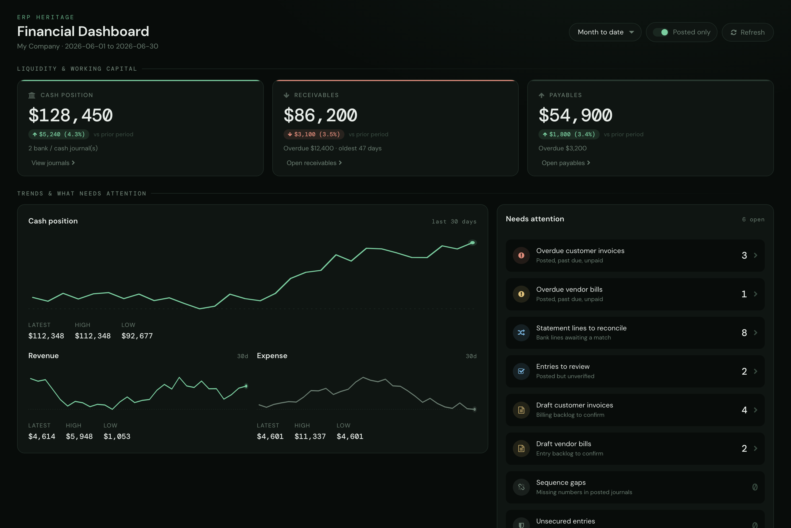
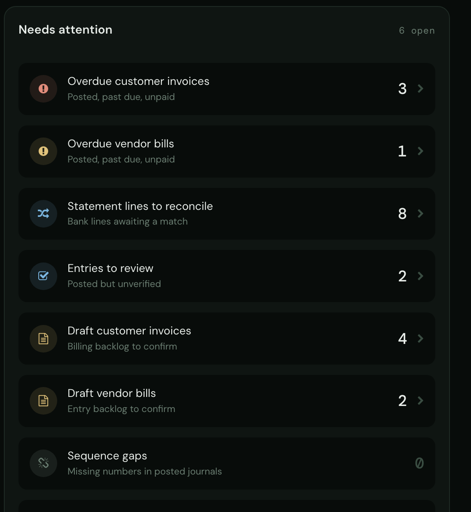
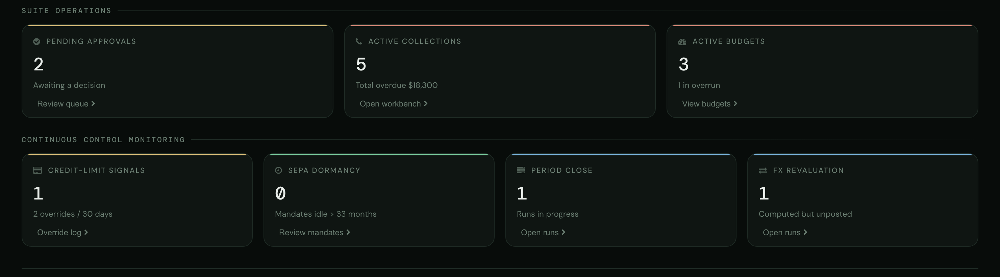

Company-scoped cash-account balance, current open receivables and payables, period P and L, trends, ratios and focused drill-downs.

Company-scoped financial KPIsCash-account balance, current open AR and AP, and selected-period P&L refresh on demand and every 60 seconds while the browser tab is visible.
Ledger queries bind the dashboard company and selected date or as-of boundary. Cash uses asset_cash accounts, open AR and AP use current residuals, and operating P and L excludes proven year-end close and reversal entries.
Manual refresh is always available. The 60-second clock pauses while the browser tab is hidden, refreshes once when it becomes visible, and does not start an overlapping snapshot request.
Six core tiles always show; up to eight optional tiles light up only when the matching module is present, detected by probing the live registry. Absent modules contribute zero and never raise, so the same dashboard works on a base install or the full suite.
You open one screen. Cash-account balance, current open receivables and payables with overdue status, and selected-period revenue, expense and net carry equal-length prior-period deltas. Thirty-day trend lines show cash, revenue and expense. The receivables tile shows the oldest overdue age, while optional tiles surface installed-suite work such as active budgets and their overrun count.
Current code makes these calculation and navigation boundaries explicit.
Changing the posted-only toggle or period writes the selection, invalidates computed values, and returns a fresh snapshot. Stored relative windows also advance before a manual or automatic refresh is served.
The cash sparkline reconstructs an actual running balance. Entries dated before the 30-day window roll into an opening balance instead of being dropped, so the sparkline endpoint uses the same asset_cash scope as the cash scalar.
When a prior-period value is zero, percentage change is omitted instead of dividing by zero. Comparison windows are equal-length trailing slices ending the day before the selected period.
Payable balances are stored signed (credit-side negative). The dashboard displays the absolute value so the payables tile presents a positive liability amount.
Cash and P and L actions open matching journal items; AR and AP actions preserve posted-only scope. Active-budget and credit-override actions use the same active-date and rolling-30-day boundaries as their counters.
Optional-module detection probes the live registry, not ir.module.module, so an absent optional model contributes zero rather than raising an error on the whole dashboard.
A sparkline with fewer than two points renders a clear empty state. A zero-range series draws a horizontal mid-line instead of dividing by its zero range.
odoo 19 community financial dashboard, accounting KPI dashboard odoo, cash position and current open receivables payables, overdue status dashboard, period P&L dashboard odoo community, CFO financial dashboard odoo, cash flow sparkline trend odoo, multi-company KPI dashboard odoo

Needs-Attention RailOverdue invoices and bills, bank reconciliation and review backlogs, and ledger-integrity signals on one rail. Rows with record-level targets open those records.

Control-Tower SignalsPending approvals, active collections, overrun budgets, expiring mandates and period-close runs, all on one screen.
Validated on a tenant with 100,180 account.move.line rows and 50,000 posted invoices: every headline KPI renders in 10 ms (median) and 13 ms (p95), well under the 200 ms UI-response budget.
The interface ships translated out of the box. Switch language in Odoo and the fields, menus, and messages follow.
Premium ERP Heritage modules that extend the same stack, each built to the same engineering bar.
Imports finalised pay run journals from the Employment Hero payroll platform (KeyPay) into Odoo Community account...
Sync attendance clock events from the Employment Hero people platform into the stock Odoo Attendances app, keyed...
The Singapore country pack for the ERP Heritage Employment Hero integration
The complete ERP Heritage Employment Hero integration in one install